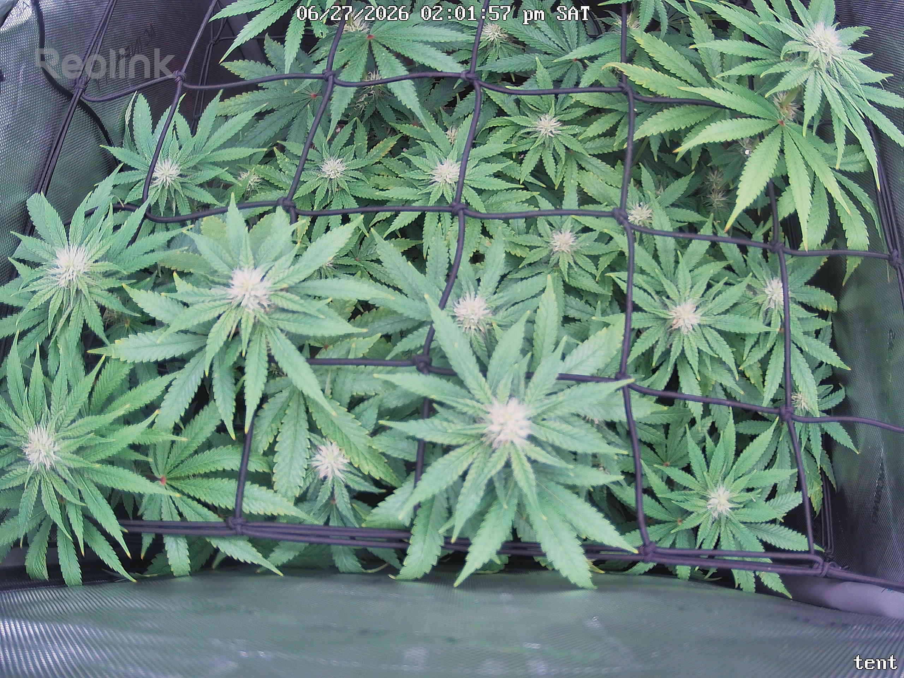

← All reports
Jun 27, 2026
Sat Jun 27, 2026 — 2:01 PM

Prognosis
Here's the read on today's check-in (~Day 24 of flower, ~8 weeks in tent):
- Growth/structure: Canopy is noticeably more filled and even vs 6/26 — colas pushing up through both scrog layers, more leaf overlap and a flatter, well-trained horizontal plane. The training is doing its job: lots of evenly-spaced bud sites across the net, no single dominant cola running away.
- Bud development: Multiple frosty flower clusters with white pistils visible at the cola tops (center and back). Still early-flower stack — pistil-heavy, not much fattening yet, which is right for ~3.5 weeks in.
- Color: Healthy medium-to-deep green throughout. Slightly lighter green on the newest top growth (normal for fast flower stretch under ~850 PPFD), not bleaching — no whitening of the colas directly under the light.
- Stress signs: None significant. No tacoing, no canoe/cupping, leaves are flat and turgid (afternoon shot, lights on, no droop). I don't see fresh tip burn spreading into new growth — consistent with your 6/24 note that the 6/22 light-stress burn was resolving. No webbing, stippling, or visible mites.
- Soil/water: Surface not visible (good canopy coverage). Last watering was the 2 gal bottom-feed on 6/24 — at ~4-day cadence you're about due; no drought droop yet but plan a feed in the next day or so.
- Phase check: Right on track. Germinated 4/28, flipped 6/3, so ~24 days into 12/12 — you'd expect exactly this: stretch tapering, sites set, early pistil formation, no real swell. Canopy density and node count look appropriate, no stall between snapshots.
- Next actions: No corrective action needed. Routine: water within ~24–48h, keep tucking new growth under the second net as it stretches, and keep up casual underside pest checks since you're only ~2 weeks past the last mite scare.
Overall: Healthy, vigorous early-flower plant that's well-trained and pest-free — no problems, just maintenance.